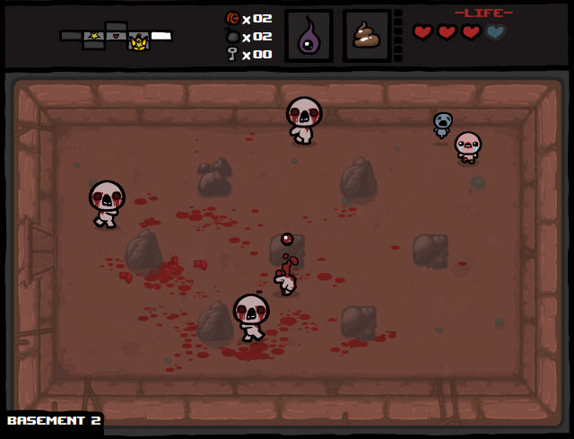
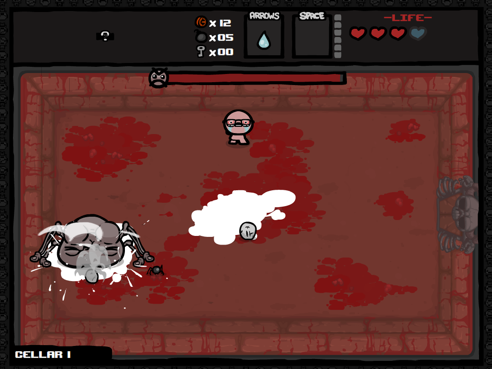

To be reborn..
You have to be born first!

The Binding Of Isaac: Rebirth, is the remake of the original version of The Binding Of Isaac. This earlier flash version of the game was also a very financially successful game! Edmund was once even in talk with Nintendo about a DS Port! This version was released in 2011 and it was created in a single week for a game jam! I really do love flash games. They all have this certain kitschy vibe that really vibes with me! The game is pretty similar to the later remade version, having a similar but simpler gameplay loop. They were really limited by the flash engine's capabilities.

It's not Isaac without Expansions! The Wrath Of The Lamb is an expansion to the original Binding Of Isaac! It adds two new final bosses, a new character "Samson", and a whole bunch more items! This was sadly the only expansion for the original The Binding of Isaac. Edmund and Himsl have said that they wanted to do more, but they were limited once again by the flash engine. There was another sort of expansion update called Eternal Edition, which came out way after Rebirth came out. It only added a new mode, so I won't really get into it here.
It's always fun to look back at the humble beginnings of a game you're into! I enjoyed researching this and I hope you enjoyed reading about it.